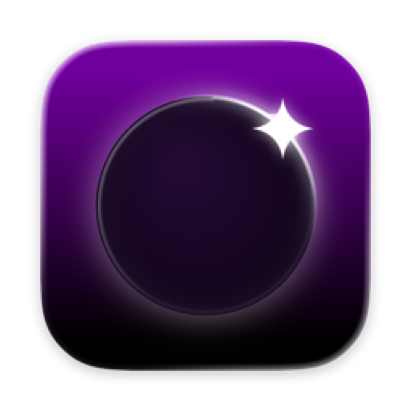

High-fidelity streaming.
Up to 4K at 240 Hz. HDR. AV1 on supported Macs. Fidelity comes first.

GlimmerYour PC games, streamed to your Mac with Sunshine.
A native Mac app, from the first click to the last frame.
Free, now and always.
Download for MacmacOS 26 or later, Apple silicon
Run in Terminal
brew tap se7enbrc/glimmer && brew trust --tap se7enbrc/glimmer && brew install --cask glimmer
4K · 240 Hz · HDR · 361 Mbps
Last played 4 minutes ago
Interactive replica of the launcher · Real screenshot
Up to 4K at 240 Hz. HDR. AV1 on supported Macs. Fidelity comes first.
Liquid Glass. Menu bar. Shortcuts, Siri and a command line. Built with Swift.
No accounts. No analytics. Just your PC, your local network and the update feed.
Wake on LAN. Wi-Fi optimization. Full screen, notch included. Automatic updates.
Set up your PC